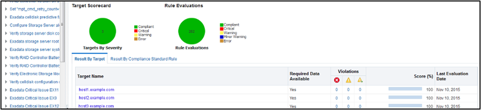

2.10.1 Integrating Health Check Results with Oracle Enterprise Manager
Integrate health check results from Oracle ORAchk and Oracle EXAchk into Oracle Enterprise Manager.
Oracle Enterprise Manager Cloud Control releases 13.1 and 13.2 support integration with Oracle ORAchk and Oracle EXAchk through the Oracle Enterprise Manager ORAchk Healthchecks Plug-in. The Oracle Engineered System Healthchecks plug-in supported integration with EXAchk for Oracle Enterprise Manager Cloud Control 12c release 12.1.0.5 and earlier releases.
With Oracle Enterprise Manager Cloud Control 13.1, Oracle ORAchk and Oracle EXAchk check results are integrated into the compliance framework. Integrating check results into the compliance framework enables you to display Compliance Framework Dashboards and browse checks by compliance standards.
-
Integrate check results into Oracle Enterprise Manager compliance framework.
-
View health check results in native Oracle Enterprise Manager compliance dashboards.
-
Related checks are grouped into compliance standards where you can view targets checked, violations, and average score.
-
From within a compliance standard, drill-down to see individual check results and break the results by targets.
Figure 2-26 Compliance Standards Drill-Down

Description of "Figure 2-26 Compliance Standards Drill-Down"
Note:
Although Oracle ORAchk and Oracle EXAchk do not require additional licenses, you require applicable Oracle Enterprise Manager licenses.